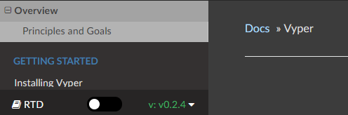

In solving the levels of the CTF, we have seen the pitfalls of using a programming language like Solidity to develop smart contracts. To address this, one language that has been proposed is Vyper. In this lab, you will re-write the Fundraiser smart contract in Vyper and deploy it using Remix. For more resources on Vyper go to https://vyper.readthedocs.io. Configure the site to ensure that the version of the documentation you have matches the version of the compiler you're using:

Recall that the Fundraiser contract is like a virtual kickstarter, where the owner of the fundraiser sets a fundraising goal that must be met within a certain amount of time. If the fundraiser gets fully funded to a goal, the owner receives the funds, but if it does not reach the goal, then the contributors will be refunded their contributions.
Our first step is to declare the contract in Vyper and define our storage variables. Specifically, take the below variables in the original Solidity contract, and declare them in your Vyper version. These variables include the address of the owner of the fundraiser, the target goal for amount of funds to be raised, the time at which the fundraiser ends, and a list of contributors objects that include both the address and the contribution of each contributor.
address public owner; //target fundraising value
uint public target; //time that fundraiser ends
uint public endTime; //list of contributors
Contributor[] contributors;
struct Contributor{
address userAddress;
uint contribution;
}Next, you will need to rewrite the contract's constructor that sets the owner's address, the target goal, and the duration of the Fundraiser. The original Solidity code is shown below. Implement its equivalent in Vyper.
constructor(uint _target, uint duration) public payable {
owner = msg.sender;
target = _target;
endTime = now + duration;
}Next, you will need You may be wondering where funds go, or how to "pay into" the smart contract. This is established by declaring a function "payable" as can be seen on the first line below. When a EOA sends funds to a smart contract they're authorizing it hold the money. In our case, that money will go to the owner of the contract if the goal is met. It's important to do logic checks here, do we want "now" to be greater than the the expiration of the contract? No! So we require that it is less than the last block's publication time ("now"). The original Solidity code is shown below. Implement its equivalent in Vyper.
function contribute() public payable {
//require that fundraiser hasn't ended yet
require(now < endTime);
//add to list of contributors
contributors.push(Contributor(msg.sender,msg.value));
}We need a function that the owner can call to receive the funds in the case that the fundraising goal is met. We can use the function "selfdestruct(address)" to destroy the contract and send the funds held by the contract to the given address.
function collect() public{
//once target has been reached, owner can collect funds
require(address(this).balance >= target);
require(msg.sender == owner);
selfdestruct(owner);
}We also need a function that can be called to refund contributors in the case that the fundraiser ends without the goal being reached. This can be done using a for loop to iterate through each contributor and refund the amount that they contributed. The original Solidity code is shown below. Implement its equivalent in Vyper.
function refund() public{
//allow refunds once time has ended if goal hasn't been met
require(now > endTime);
require(address(this).balance < target);
//refund all contributors
for(uint i; i<contributors.length;i++) {
contributors[i].userAddress.transfer(contributors[i].contribution);
}
}We'd like to check the funds that have been paid into this smart contract. To do so, use the keyword "this", cast to an address and refer to it's balance field. The original Solidity code is shown below. Implement its equivalent in Vyper.
function balance() public view returns(uint){
return address(this).balance;
}In Remix, compile and deploy the contract. Then, find another classmate or use two accounts to test the functionality of your contract. First, try a successful fundraiser.
- Instantiate contract with a long duration (to give yourself 24 hours to finish the lab, duration should be set to 86400)
contribute()funds beneath the target- Attempt to
collect()- should fail contribute()funds to meet the target- Attempt to
collect()- should succeed and return your $
Then, try an unsuccessful fundraiser
- Instantiate contract with a short duration (enough time to perform one contribution)
contribute()funds beneath the target- Wait until
endTimehas passed - Trigger
refund()
For both scenarios, include screenshots of the final set of contract transactions via Etherscan. Transactions should include the initial deployment, the incremental funding of the contract, and the eventual collection (or refund) of the funds in the contract.
Commit your code as
/vyper/fundraiser/fundraiser.vy
Within the same directory, also create a file called contract_address.txt that has the address of your deployed contract
/vyper/fundraiser/contract_address.txt
You've written and deployed your own smart contract code. Celebrate (or not).